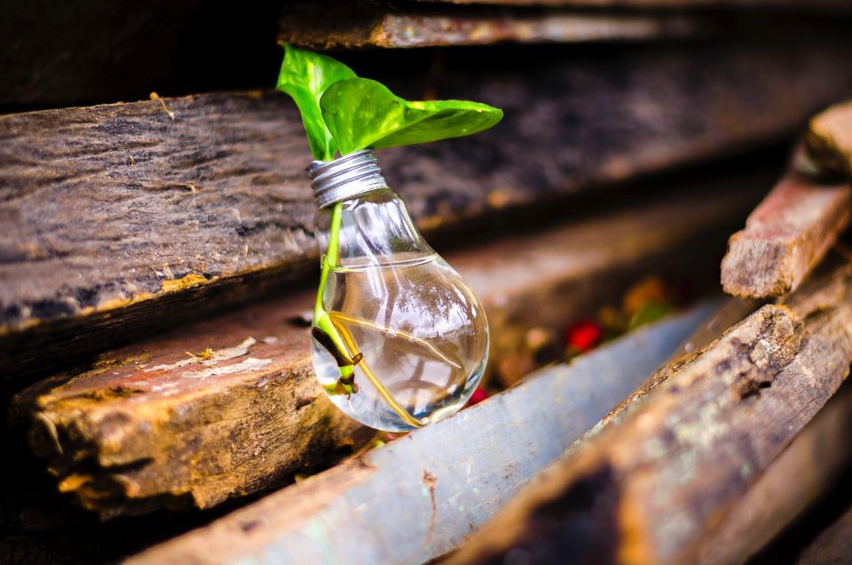

The Well-Conceived 180
Home Page Under Construction
Home Page
The decision to start a family is possibly the most consequential choice we can make in life. But what happens when you want a baby, you’ve prepared and anticipated and maybe even NAMED that baby, but all attempts are in vain?
This is where my husband & I found ourselves shortly after we married in 2004, when we got the disappointing results from our first of many pregnancy tests. Navigating this trail called infertility has been the journey of a lifetime. It has been the source of both despair and euphoria, of both inadequacy and gratitude, and of both isolation and camaraderie. In many ways I’m at the end of this journey—I’ve given away my stash of pregnancy clothes and the brand new Christening dress I hung in the closet for fifteen hopeful years. I’m letting my foster care license expire this year and turning our spare bedroom into a space for my creative projects to come into being. For the first time in my life I see my family as complete and myself as a whole person, infertility and all.
You could say I’ve come to term with it.
Months ago when I first conceived of this blog I kept wavering between two different concepts. The first idea was to host a blog devoted to the ALI-related issues (adoption, loss, and infertility) which had all but consumed me for more than fifteen years. The second was to host a blog about creative recovery, as my obsession with conceiving and raising children was being replaced by a return to my original life goal of becoming an artist. As I fluctuated back and forth, it struck me one day that these concepts might be one and the same. After all, the difference between procreate and create is only one syllable. In a painful moment I realized that while I had been preoccupied by bringing children into the world, I had abandoned my own brain children. I had a change of heart and a change of direction.
That was when Well-Conceived 180 was born. Sometimes it’s difficult to thrive on the ALI path, but I know it’s not impossible. This blog is part information, part exploration, and part creation, a place where physical-children and brain-children come into existence as equals. I invite you to join me on my journey of recovery.